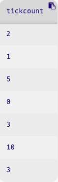

From Tables to Lists
Previously [Introduction to Tabular Data] we began to process collective data in the form of tables. Though we saw several powerful operations that let us quickly and easily ask sophisticated questions about our data, they all had two things in common. First, all were operations by rows. None of the operations asked questions about an entire column at a time. Second, all the operations not only consumed but also produced tables. However, we already know [Getting Started] there are many other kinds of data, and sometimes we will want to compute one of them. We will now see how to achieve both of these things, introducing an important new type of data in the process.
Basic Statistical Questions
There are many more questions we might want to ask of our events data. For instance:
- The most-frequently used discount code.
- The average number of tickets per order.
- The largest ticket order.
- The most common number of tickets in an order.
- The collection of unique discount codes that were used (many might have been available).
- The collection of distinct email addresses associated with orders, so we can contact customers (some customers may have placed multiple orders).
- Which school lead to the largest number of orders with a
"STUDENT"discount.
Notice the kinds of operations that we are talking about: computing the maximum, minimum, average, median, and other basic statistics.Pyret has several built-in statistics functions in the math and statistics packages.
Do Now!
Think about whether and how you would express these questions with the operations you have already seen.
In each of these cases, we need to perform a computation on a single
column of data (even in the last question about the
"STUDENT"
discount, as we would filter the table to those rows, then do a
computation over the
email
column). In order to capture these in code, we need to extract a column
from the table.
For the rest of this chapter, we will work with a cleaned copy of the
event-data
from the previous chapter. The cleaned data, which applies the
transformations at the end of the previous chapter, is in a different
tab of the same Google Sheet as the other versions of the event
data.
include gdrive-sheets
include data-source
ssid = "1Ks4ll5_8wyYK1zyXMm_21KORhagSMZ59dcr7i3qY6T4"
cleaned-data =
load-table: name, email, tickcount, discount, delivery, zip
source: load-spreadsheet(ssid).sheet-by-name("Cleaned", true)
sanitize name using string-sanitizer
sanitize email using string-sanitizer
sanitize tickcount using num-sanitizer
sanitize discount using string-sanitizer
sanitize delivery using string-sanitizer
sanitize zip using string-sanitizer
endExtracting a Column from a Table
Our collection of table functions includes one that we haven’t yet
used, called
select-columns.
As the name suggests, this function produces a new table containing only
certain columns from an existing table. Let’s extract the
tickcount
column so we can compute some statistics over it. We use the following
expression:
select-columns(cleaned-data, [list: "tickcount"])
This focuses our attention on the numeric ticket sales, but we’re still stuck with a column in a table, and none of the other tables functions let us do the kinds of computations we might want over these numbers. Ideally, we want the collection of numbers on their own, without being wrapped up in the extra layer of table cells.
In principle, we could have a collection of operations on a single column. In some languages that focus solely on tables, such as SQL, this is what you’ll find. However, in Pyret we have many more kinds of data than just columns (as we’ll soon see [Introduction to Structured Data], we can even create our own!), so it makes sense to leave the gentle cocoon of tables sooner or later. An extracted column is a more basic kind of datum called a list, which can be used to represent a sequence of data outside of a table.
Just as we have used the notation
.row-n
to pull a single row from a table, we use a similar dot-based notion to
pull out a single column. Here’s how we extract the
tickcount
column:
cleaned-data.get-column("tickcount")In response, Pyret produces the following value:
[list: 2, 1, 5, 0, 3, 10, 3]Now, we seem to have only the values that were in the cells in the
column, without the enclosing table. Yet the numbers are still bundled
up, this time in the
[list: ...]
notation. What is that?
Understanding Lists
A list has much in common with a single-column table:
- The elements have an order, so it makes sense to talk about the “first”, “second”, “last”—and so on—element of a list.
- All elements of a list are expected to have the same type.
The crucial difference is that a list does not have a “column name”; it is anonymous. That is, by itself a list does not describe what it represents; this interpretation is done by our program.
Lists as Anonymous Data
This might sound rather abstract—and it is—but this isn’t actually a
new idea in our programming experience. Consider a value like
3
or
-1:
what is it? It’s the same sort of thing: an anonymous value that does
not describe what it represents; the interpretation is done by our
program. In one setting
3
may represent an age, in another a play count; in one setting
-1
may be a temperature, in another the average of several temperatures.
Similarly with a string: Is
"project"
a noun (an activity that one or more people perform) or a verb (as when
we display something on a screen)? Likewise with images and so on. In
fact, tables have been the exception so far in having description built
into the data rather than being provided by a program!
This genericity is both a virtue and a problem. Because, like other anonymous data, a list does not provide any interpretation of its use, if we are not careful we can accidentally mis-interpret the values. On the other hand, it means we can use the same datum in several different contexts, and one operation can be used in many settings.
Indeed, if we look at the list of questions we asked earlier, we see that there are several common operations—maximum, minimum, average, and so on—that can be asked of a list of values without regard for what the list represents (heights, ages, playcounts). In fact, some are specific to numbers (like average) while some (like maximum) can be asked of any type on which we can perform a comparison (like strings).
Creating Literal Lists
We have already seen how we can create lists from a table, using
get-column.
As you might expect, however, we can also create lists directly:
[list: 1, 2, 3]
[list: -1, 5, 2.3, 10]
[list: "a", "b", "c"]
[list: "This", "is", "a", "list", "of", "words"]Of course, lists are values so we can name them using variables—
shopping-list = [list: "muesli", "fiddleheads"]—pass them to functions (as we will soon see), and so on.
Do Now!
Based on these examples, can you figure out how to create an empty list?
As you might have guessed, it’s
[list: ]
(the space isn’t necessary, but it’s a useful visual reminder of the
void).
Operating on Lists
Built-In Operations on Lists of Numbers
Pyret handily provides a useful set of operations we can already perform on lists. The lists documentation describes these operations. As you might have guessed, we can already compute most of the answers we’ve asked for at the start of the chapter. First we need to include some libraries that contain useful functions:
import math as M
import statistics as SWe can then access several useful functions:
tickcounts = cleaned-data.get-column("tickcount")
M.max(tickcounts) # largest number in a list
M.sum(tickcounts) # sum of numbers in a list
S.mean(tickcounts) # mean (average) of numbers in a list
S.median(tickcounts) # median of numbers in a listThe
M.
notation means “the function inside the library
M.
The
import
statement in the above code gave the name
M
to the
math
library.
Built-In Operations on Lists in General
Some of the useful computations in our list at the start of the
chapter involved the
discount
column, which contains strings rather than numbers. Specifically, let’s
consider the following question:
- Compute the collection of unique discount codes that were used (many might have been available).
None of the table functions handle a question like this. However, this is a common kind of question to ask about a collection of values (How many unique artists are in your playlist? How many unique faculty are teaching courses?). As such, Pyret (as most languages) provides a way to identify the unique elements of a list. Here’s how we get the list of all discount codes that were used in our table:
import lists as L
codes = cleaned-data.get-column("discount")
L.distinct(codes)The
distinct
function produces a list of the unique values from the input list: every
value in the input list appears exactly once in the output list. For the
above code, Pyret produces:
[list: "BIRTHDAY", "STUDENT", "none"]What if we wanted to exclude
"none"
from that list? After all,
"none"
isn’t an actual discount code, but rather one that we introduced while
cleaning up the table. Is there a way to easily remove
"none"
from the list?
There are two ways we could do it. In the Pyret lists documentation,
we find a function called
remove,
which removes a specific element from a list:
| |
|
But this operation should also sound familiar: with tables, we used
filter-with
to keep only those elements that meet a specific criterion. The
filtering idea is so common that Pyret (and most other languages)
provide a similar operation on lists. In the case of the discount codes,
we could also have written:
fun real-code(c :: String) -> Boolean:
not(c == "none")
end
L.filter(real-code, L.distinct(codes))The difference between these two approaches is that
filter
is more flexible: we can check any characteristic of a list element
using
filter,
but
remove
only checks whether the entire element is equal to the value that we
provide. If instead of removing the specific string
"none",
we had wanted to remove all strings that were in all-lowercase, we would
have needed to use
filter.
Exercise
Write a function that takes a list of words and removes those words in which all letters are in lowercase. (Hint: combine
string-to-lowerand==).
An Aside on Naming Conventions
Our use of the plural
codes
for the list of values in the column named
discount
(singular) is deliberate. A list contains multiple values, so a plural
is appropriate. In a table, in contrast, we think of a column header as
naming a single value that appears in a specific row. Often, we speak of
looking up a value in a specific row and column: the singular name for
the column supports thinking about lookup in an individual row.
Getting Elements By Position
Let’s look at a new analysis question: the events company recently
ran an advertising campaign on
web.com,
and they are curious whether it paid off. To do this, they need to
determine how many sales were made to people with
web.com
email addresses.
Do Now!
Propose a task plan (Task Plans) for this computation.
Here’s a proposed plan, annotated with how we might implement each part:
- Get the list of email addresses (use
get-column) - Extract those that came from
web.com(useL.filter) - Count how many email addresses remain (using
L.length, which we hadn’t discussed yet, but it is in the documentation)
(As a reminder, unless you immediately see how to solve a problem, write out a task plan and annotate the parts you know how to do. It helps break down a programming problem into more manageable parts.)
Let’s discuss the second task: identifying messages from
web.com.
We know that email addresses are strings, so if we could determine
whether an email string ends in
@web.com,
we’d be set. You could consider doing this by looking at the last 7
characters of the email string. Another option is to use a string
operation that we haven’t yet seen called
string-split-all,
which splits a string into a list of substrings around a given
character. For example:
| |
|
| |
|
This seems pretty useful. If we split each email string around the
@
sign, then we can check whether the second string in the list is
web.com
(since email addresses should have only one
@
sign). But how would we get the second element out of the list produced
by
string-split-all?
Here we dig into the list, as we did to extract rows from tables, this
time using the
get
operation.
| |
|
Do Now!
Why do we use
1as the input togetif we want the second item in the list?
Here’s the complete program for doing this check:
fun web-com-address(email :: String) -> Boolean:
doc: "determine whether email is from web.com"
string-split(email, "@").get(1) == "web.com"
where:
web-com-address("bonnie@pyret.org") is false
web-com-address("parrot@web.com") is true
end
emails = cleaned-data.get-column("email")
L.length(L.filter(web-com-address, emails))Exercise
What happens if there is a malformed email address string that doesn’t contain the
@string? What would happen? What could you do about that?
Transforming Lists
Imagine now that we had a list of email addresses, but instead just wanted a list of usernames. This doesn’t make sense for our event data, but it does make sense in other contexts (such as connecting messages to folders organized by students’ usernames).
Specifcally, we want to start with a list of addresses such as:
[list: "parrot@web.com", "bonnie@pyret.org"]and convert it to
[list: "parrot", "bonnie"]Do Now!
Consider the list functions we have seen so far (
distinct,filter,length) – are any of them useful for this task? Can you articulate why?
One way to articulate a precise answer to this is think in terms of
the inputs and outputs of the existing functions. Both
filter
and
distinct
return a list of elements from the input list, not transformed elements.
length
returns a number, not a list. So none of these are appropriate.
This idea of transforming elements is similar to the
transform-column
operation that we previously saw on tables. The corresponding operation
on lists is called
map.
Here’s an example:
fun extract-username(email :: String) -> String:
doc: "extract the portion of an email address before the @ sign"
string-split(email, "@").get(0)
where:
extract-username("bonnie@pyret.org") is "bonnie"
extract-username("parrot@web.com") is "parrot"
end
L.map(extract-username,
[list: "parrot@web.com", "bonnie@pyret.org"])Recap: Summary of List Operations
At this point, we have seen several useful built-in functions for working with lists:
filter :: (A -> Boolean), List<A> -> List<A>, which produces a list of elements from the input list on which the given function returnstrue.map :: (A -> B), List<A> -> List<B>, which produces a list of the results of calling the given function on each element of the input list.distinct :: List<A> -> List<A>, which produces a list of the unique elements that appear in the input list.length :: List<A> -> Number, which produces the number of elements in the input list.
Here, a type such as
List<A>
says that we have a list whose elements are of some (unspecified) type
which we’ll call
A.
A type variable such as this is useful when we want to show
relationships between two types in a function contract. Here, the type
variable
A
captures that the type of elements is the same in the input and output
to
filter.
In
map,
however, the type of element in the output list could differ from that
in the input list.
One additional built-in function that is quite useful in practice is:
member :: List<A>, Any -> Boolean, which determines whether the given element is in the list. We use the typeAnywhen there are no constraints on the type of value provided to a function.
Many useful computations can be performed by combining these operations.
Exercise
Assume you used a list of strings to represent the ingredients in a recipe. Here are three examples:
stir-fry = [list: "peppers", "pork", "onions", "rice"] dosa = [list: "rice", "lentils", "potato"] misir-wot = [list: "lentils", "berbere", "tomato"]Write the following functions on ingredient lists:
recipes-uses, which takes an ingredient list and an ingredient and determines whether the recipe uses the ingredient.make-vegetarian, which takes an ingredient list and replaces all meat ingredients with"tofu". Meat ingredients are"pork","chicken", and"beef".protein-veg-count, which takes an ingredient list and determines how many ingredients are in the list that aren’t"rice"or"noodles".
Exercise
More challenging: Write a function that takes an ingredient and a list of ingredient lists and produces a list of all the lists that contain the given ingredient.
Hint: write examples first to make sense of the problem as needed.
Exercise
Even more challenging: Try to write a function that takes two ingredient lists and returns all of the ingredients that are common to both lists. What issue(s) or limitations do you run into?
Come back to this problem after you finish the next section.
Lambda: Anonymous Functions
NOTE: if you already saw
lam
in
, feel free to skip this section, or just do the exercises at the end. Here we present
lam
using lists and
filter
, rather than tables and
filter-with
.
Let’s revisit the program we wrote earlier in this chapter for finding all of the discount codes that were used in the events table:
fun real-code(c :: String) -> Boolean:
not(c == "none")
end
L.filter(real-code, codes)This program might feel a bit verbose: do we really need to write a
helper function just to perform something as simple as a
filter?
Wouldn’t it be easier to just write something like:
L.filter(not(c == "none"), codes)Do Now!
What will Pyret produce if you run this expression?
Pyret will produce an
unbound identifier
error around the use of
c
in this expression. What is
c?
We mean for
c
to be the elements from
codes
in turn. Conceptually, that’s what
filter
does, but we don’t have the mechanics right. When we call a function, we
evaluate the arguments before the body of the function. Hence, the error
regarding
c
being unbound. The whole point of the
real-code
helper function is to make
c
a parameter to a function whose body is only evaluated once a value for
c
is available.
To tighten the notation as in the one-line
filter
expression, then, we have to find a way to tell Pyret to make a
temporary function that will get its inputs once
filter
is running. The following notation achieves this:
L.filter(lam(c): not(c == "none") end, codes)We have added
lam(c)
and
end
around the expression that we want to use in the
filter.
The
lam(c)
says “make a temporary function that takes
c
as an input”. The
end
serves to end the function definition, as when we use
fun.
lam
is short for
lambda,
a form of function definition that exists in many, though not all,
languages.
The main difference between our original expression (using the
real-code
helper) and this new one (using
lam)
can be seen through the program directory. To explain this, a little
detail about how
filter
is defined under the hood. In part, it looks like:
fun filter(keep :: (A -> Boolean), lst :: List<A>) -> List<A>:
if keep(<elt-from-list>):
...
else:
...
end
endWhether we pass
real-code
or the
lam
version to
filter,
the
keep
parameter ends up referring to a function with the same parameter and
body. Since the function is only actually called through the
keep
name, it doesn’t matter whether or not a name is associated with it when
it is initially defined.
In practice, we use
lam
when we have to pass simple (single line) functions to operations like
filter
(or
map).
We could have just as easily used them when we were working with tables
(build-column,
filter-with,
etc). Of course, you can continue to write out names for helper
functions as we did with
real-code
if that makes more sense to you.
Exercise
Write the program to extract the list of usernames from a list of email addresses using
lamrather than a named helper-function.
Exercise
Try again to tackle the problem from the end of the previous section: write a function that takes two ingredient lists and returns all of the ingredients that are common to both lists.
Combining Lists and Tables
The table functions we studied previously were primarily for processing rows. The list functions we’ve learned in this chapter have been primarily for processing columns (but there are many more uses in the chapters ahead). If an analysis involves working with only some rows and some columns, we’ll use a combination of both table and list functions in our program.
Exercise
Given the events table, produce a list of names of all people who will pick up their tickets.
Exercise
Given the events table, produce the average number of tickets that were ordered by people with email addresses that end in
".org".
Sometimes, there will be more than one way to perform a computation:
Do Now!
Consider a question such as “how many people with
".org"email addresses bought more than 8 tickets”. Propose multiple task plans that would solve this problem, including which table and list functions would accomplish each task.
There are several options here:
- Get the
event-datarows with no more than 8 tickets (usingfilter-with), get those rows that have".org"addresses (anotherfilter-with), then ask for how many rows are in the table (using<table>.length()). - Get the
event-datarows with no more than 8 tickets and".org"address (usingfilter-withwith a function that checks both conditions at once), then ask for how many rows are in the table (using<table>.length()). - Get the
event-datarows with no more than 8 tickets (usingfilter-with), extract the email addresses (usingget-column), limit those to".org"(usingL.filter), then get the length of the resulting list (usingL.length).
There are others, but you get the idea.
Do Now!
Which approach do you like best? Why?
While there is no single correct answer, there are various considerations:
- Are any of the intermediate results useful for other computations? While the second option might seem best because it filters the table once rather than twice, perhaps the events company has many computations to perform on larger ticket orders. Similarly, the company may want the list of email addresses on large orders for other purposes (the third option)
- Do you want to follow a discipline of doing operations on individuals within the table, extracting lists only when needed to perform aggregating computations that aren’t available on tables?
- Does one approach seem less resource-intensive than the other? This is actually a subtle point: you might be tempted to think that filtering over a table uses more resources than filtering over a list of values from one column, but this actually isn’t the case. We’ll return to this discussion later.
A company or project team sometimes sets design standards to help you make those decisions. In the absence of that, and especially as you are learning to program, consider multiple approaches when faced with such problems, then pick one to implement. Maintaining the ability to think flexibly about approaches is a useful skill in any form of design.
Until now we’ve only seen how to use built-in functions over lists. Next [Processing Lists], we will study how to create our own functions that process lists. Once we learn that, these list processing functions will remain powerful but will no longer seem quite so magical, because we’ll be able to build them for ourselves!